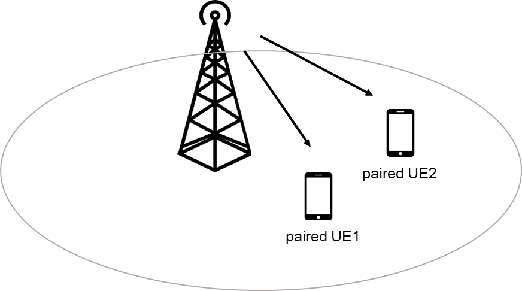
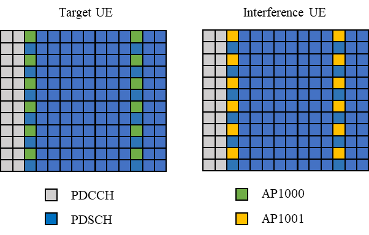
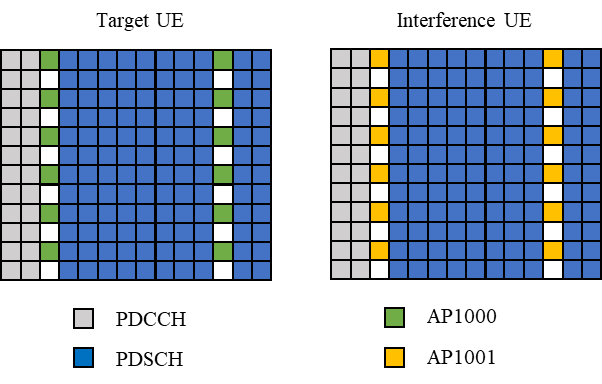
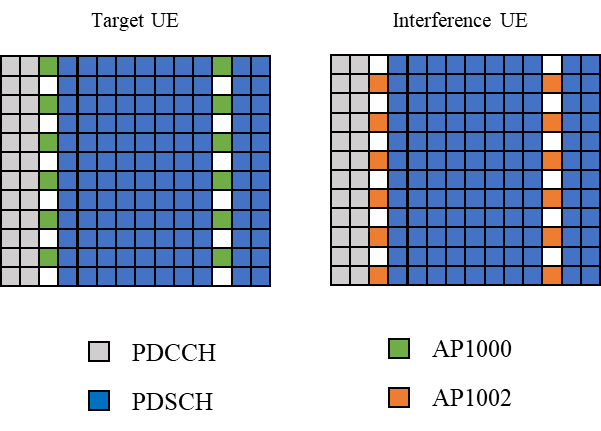
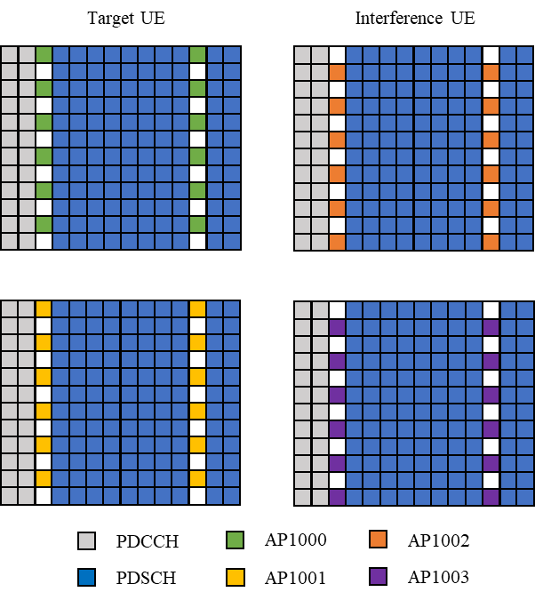
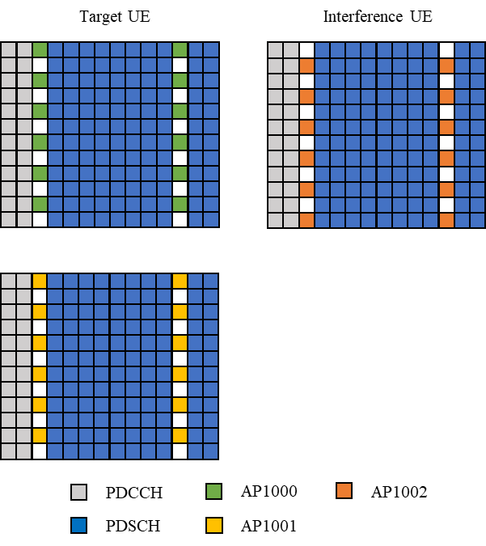
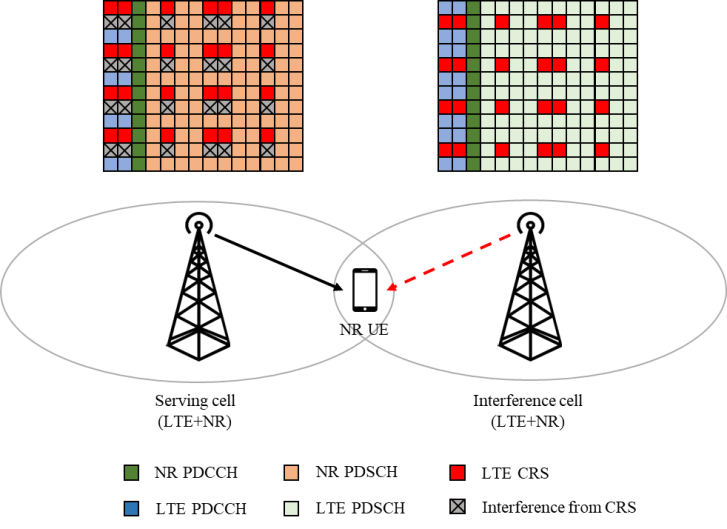
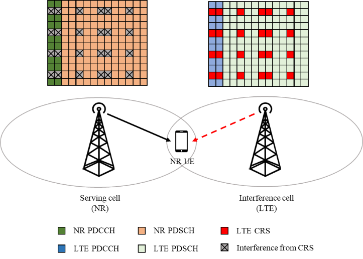

Technical Specification Group Radio Access Network;
Further enhancement on NR demodulation performance
(Release 17)
The present document has been developed within the 3rd
Generation Partnership Project (3GPP TM) and may be further
elaborated for the purposes of 3GPP.
The present document has not been subject to any approval process by the
3GPP Organizational Partners and shall not be implemented.
This Specification is provided for future development work within 3GPP
only. The Organizational Partners accept no liability for any use of
this Specification.
Specifications and Reports for implementation of the 3GPP TM
system should be obtained via the 3GPP Organizational Partners'
Publications Offices.
3GPP
Postal address
3GPP support office address
650 Route des Lucioles - Sophia Antipolis
Valbonne - FRANCE
Tel.: +33 4 92 94 42 00 Fax: +33 4 93 65 47 16
Internet
http://www.3gpp.org
Copyright
Notification
No part may be reproduced except as authorized by written
permission.
The copyright and the foregoing restriction extend to reproduction in
all media.
UMTS™ is a Trade Mark of ETSI registered for the benefit of its
members
3GPP™ is a Trade Mark of ETSI registered for the benefit of its
Members and of the 3GPP Organizational Partners
LTE™ is a Trade Mark of ETSI registered for the benefit of its Members
and of the 3GPP Organizational Partners
GSM® and the GSM logo are registered and owned by the GSM
Association
This Technical Report has been produced by the 3rd Generation
Partnership Project (3GPP).
The contents of the present document are subject to continuing work
within the TSG and may change following formal TSG approval. Should the
TSG modify the contents of the present document, it will be re-released
by the TSG with an identifying change of release date and an increase in
version number as follows:
Version x.y.z
where:
x the first digit:
1 presented to TSG for information;
2 presented to TSG for approval;
3 or greater indicates TSG approved document under change
control.
y the second digit is incremented for all changes of substance, i.e.
technical enhancements, corrections, updates, etc.
z the third digit is incremented when editorial only changes have
been incorporated in the document.
In the present document, modal verbs have the following meanings:
shall indicates a mandatory requirement to do
something
shall not indicates an interdiction (prohibition) to
do something
The constructions "shall" and "shall not" are confined to the context
of normative provisions, and do not appear in Technical Reports.
The constructions "must" and "must not" are not used as substitutes
for "shall" and "shall not". Their use is avoided insofar as possible,
and they are not used in a normative context except in a direct citation
from an external, referenced, non-3GPP document, or so as to maintain
continuity of style when extending or modifying the provisions of such a
referenced document.
should indicates a recommendation to do
something
should not indicates a recommendation not to do
something
may indicates permission to do something
need not indicates permission not to do
something
The construction "may not" is ambiguous and is not used in normative
elements. The unambiguous constructions "might not" or "shall not" are
used instead, depending upon the meaning intended.
can indicates that something is possible
cannot indicates that something is impossible
The constructions "can" and "cannot" are not substitutes for "may"
and "need not".
will indicates that something is certain or expected
to happen as a result of action taken by an agency the behaviour of
which is outside the scope of the present document
will not indicates that something is certain or
expected not to happen as a result of action taken by an agency the
behaviour of which is outside the scope of the present document
might indicates a likelihood that something will
happen as a result of action taken by some agency the behaviour of which
is outside the scope of the present document
might not indicates a likelihood that something will
not happen as a result of action taken by some agency the behaviour of
which is outside the scope of the present document
In addition:
is (or any other verb in the indicative mood)
indicates a statement of fact
is not (or any other negative verb in the indicative
mood) indicates a statement of fact
The constructions "is" and "is not" do not indicate requirements.
1 Scope
The present technical report documents the Phase I study outcome on
inter-user interference suppression for NR MU-MIMO and techniques to
cope with LTE CRS interference for NR UE, with the detailed objectives
as follows:、
• MMSE-IRC receiver for suppressing intra-cell inter-user
interference
- Phase I: Evaluate the performance under practical MU-MIMO
interference profile for the candidate reference receiver.
∘ Reference receiver: MMSE-IRC receiver. Use the DMRS-based
interference covariance estimation method as a starting point
∘ Prioritize slot-based transmission scenario
• Evaluate techniques to cope with CRS interference in scenarios with
overlapping spectrum for LTE and NR
- Candidate reference receiver to enable neighboring cell CRS-IM
∘ The performance benefit of neighboring cell LTE CRS-IM over the
existing rate matching solutions specified in Rel-15 and Rel-16 shall be
evaluated.
∘ Feasibility of the considered solution regarding NR PDSCH
processing timeline need to be checked.
∘ Priority will be given to solutions not having RAN1 specification
impact.
- Synchronous network scenario is prioritized. As second priority,
RAN4 could evaluate the feasibility and usefulness of the asynchronous
network scenario and specify if feasible and useful.
- 15 kHz SCS for NR is prioritized. RAN4 should evaluate the
feasibility and usefulness of 30 kHz SCS for scenarios with LTE and NR
deployed in neighboring BSs/areas and specify if feasible and
useful.
2 References
The following documents contain provisions which, through reference
in this text, constitute provisions of the present document.
- References are either specific (identified by date of publication,
edition number, version number, etc.) or non‑specific.
- For a specific reference, subsequent revisions do not apply.
- For a non-specific reference, the latest version applies. In the
case of a reference to a 3GPP document (including a GSM document), a
non-specific reference implicitly refers to the latest version of that
document in the same Release as the present document.
[1] 3GPP TR 21.905: "Vocabulary for 3GPP Specifications".
[2] 3GPP TS 38.214: “NR: Physical layer procedures for data”.
3 Definitions, symbols
and abbreviations
3.1 Terms
For the purposes of the present document, the terms given in 3GPP
TR 21.905 [1] and the following apply. A term defined in the present
document takes precedence over the definition of the same term, if any,
in 3GPP TR 21.905 [1].
3.2 Symbols
Void
3.3 Abbreviations
For the purposes of the present document, the abbreviations given in
3GPP TR 21.905 [1] and the following apply. An abbreviation defined in
the present document takes precedence over the definition of the same
abbreviation, if any, in 3GPP TR 21.905 [1].
AL Aggregation level
AP Antenna port
BWP Bandwidth part
CBW Channel bandwidth
CDM Code division multiple
CORESET Control resource set
CRS Cell-specific reference signal
CRS-IC CRS interference cancellation
CRS-IM CRS interference mitigation
CRS-RM CRS rate matching
CSI-RS Channel state information reference signal
DMRS Demodulation reference signal
DSS Dynamic spectrum sharing
FD-CDM Frequency division - code division multiple
ISD Inter-site distance
MMSE-IRC Minimum mean square error - interference rejection
combining
MMSE-MRC Minimum mean square error - maximal ratio combining
MU-MIMO Multi-user MIMO
NZP Non-zero-power
PSS Primary synchronization signal
PT-RS Phase-tracking reference signal
QCL Quasi co-location
RB Resource block
RSRP Reference signal received power
SCS Subcarrier spacing
SINR Signal-to-interference-and-noise ratio
SSB Synchronization signal block
SSS Secondary synchronization signal
TBS Transport block size
TCI Transmission configuration indicator
TDL Tapped delay line
TM Transmission mode
4 Inter-user
interference suppression for MU-MIMO
4.1 Scenario and
interference modelling
4.1.1 Scenario
MU-MIMO allows gNB to transmit data to multiple UEs in the same
time-frequency resources through spatial multiplexing. The process of
selecting paired UEs is called ‘pairing’. As illustrated in Figure
4.1.1-1, UE1 and UE2 are paired and gNB transmits data to both UEs with
suitable precoders through the same time-frequency resources. However,
the gNB cannot guarantee the perfect pairing of multiple users in the
real network. The paired UEs may not perfectly spatially orthogonal to
each other and this will induce the intra-cell interference between
paired UEs.

Figure 4.1.1-1. gNB transmit data to paired UE1 and UE2 with the same
time-frequency resources
To evaluate the performance of UE with intra-cell interference
induced by spatial multiplexing, the following scenarios illustrated
from Figure 4.1.1-2 to Figure 4.1.1-6 are considered for the case of
number of paired UEs is 2.
• Target UE with single DMRS antenna port:
- Scenario 1-1: Number of CDM group without data is 1
∘ AP1000 for target UE, AP1001 for interference UE
- Scenario 1-2: Number of CDM group without data is 2
∘ AP1000 for target UE, AP1001 for interference UE
- Scenario 1-3: Number of CDM group without data is 2
∘ AP1000 for target UE, AP1002 for interference UE
• Target UE with two DMRS antenna ports:
- Scenario 2-1: Number of CDM group without data is 2
∘ AP1000 and 1001 for target UE, AP1002 and 1003 for interference
UE
- Scenario 2-2: Number of CDM group without data is 2
∘ AP1000 and 1001 for target UE, AP1002 for interference UE

Figure 4.1.1-2: Scenario 1-1, number of CDM group without data is 1
and AP1000 for target UE, AP1001 for interference UE

Figure 4.1.1-3: Scenario 1-2, number of CDM group without data is 2
and AP1000 for target UE, AP1001 for interference UE

Figure 4.1.1-4: Scenario 1-3, number of CDM group without data is 2
and AP1000 for target UE, AP1002 for interference UE

Figure 4.1.1-5: Scenario 2-1, number of CDM group without data is 2
and AP1000 and 1001 for target UE, AP1002 and 1003 for interference
UE

Figure 4.1.1-6: Scenario 2-2, number of CDM group without data is 2
and AP1000 and 1001 for target UE, AP1002 for interference UE
4.1.2 Interference model
The PDSCH and DMRS of the paired UEs are precoded prior to
transmission. The precoder for each user is denoted by \(\mathbf{W}_{1}'\) and \(\mathbf{W}_{2}'\) respectively.
\(\mathbf{W}_{i}\ \)is the precoder
matrix of ith UE, of size NTX x NLi
from Type I single panel codebook as described in [2]. Where,
NTX is the number of TX antenna, NLi is the number
of layers from ith UE. The combined precoder \(\mathbf{W\ = \ \lbrack W}_{1}\
\mathbf{W}_{2}\rbrack\), of size NTX x NL
where, NL is the total number layers across all users.
The precoder of the target UE \(\mathbf{W}_{1}\) is randomly selected. For
the co-scheduled UE, the precoder \(\mathbf{W}_{2}\) is selected in one of the
two ways below.
• Orthogonal precoder: \(\mathbf{W}_{2}\) is randomly selected from
the codebook with a constraint that the combined precoder
W has orthogonal columns, i.e., the off-diagonal
entries of WHW are zero.
• Random precoder: \(\mathbf{W}_{2}\) is randomly selected from
the codebook ensuring any column of \(\mathbf{W}_{2}\) is not identical to any
column of \(\mathbf{W}_{1}\)
To maintain the average per UE signal power as NLi
/NL, an additional scaling is applied to the each precoder
as:
In this clause, we provide the system equations for evaluating the
performance of intra-cell inter-user interference mitigation.
The NRx-dimensional received signal vector
r of the \(k\)-th
subcarrier and the \(l\)-th OFDM symbol
is assumed to be expressed as a sum of target’s UE own signal \(\mathbf{H}_{1}(k,l)\mathbf{d}_{1}(k,l)\),
and co-scheduled UEs’ interference signals \(\mathbf{H}_{j}(k,l)\mathbf{d}_{j}(k,l)\)
(j>1) and the white noise \(\mathbf{n}(k,l)\);
\(\mathbf{d}_{j}(k,l)\) and \(\mathbf{H}_{j}(k,l),\ j = \{ 2,\ldots
N_{UE}\}\) represent the Nlayer,j x1 transmitted
signal vector and the (NRx x Nlayer,j) channel
matrix between the j-th co-scheduled UE’s interference and the
UE containing the contribution from receiver branches, with \(\mathbf{H}_{j} = \begin{bmatrix}
{(\mathbf{H}_{j,1})}^{H} \\
{(\mathbf{H}_{j,2})}^{H}
\end{bmatrix}\) for two receiver antennas and \(\mathbf{H}_{j} = \begin{bmatrix}
\begin{matrix}
{(\mathbf{H}_{j,1})}^{H} \\
{(\mathbf{H}_{j,2})}^{H}
\end{matrix} \\
\begin{matrix}
{(\mathbf{H}_{j,3})}^{H} \\
{(\mathbf{H}_{j,4})}^{H}
\end{matrix}
\end{bmatrix}\) for four receiver antennas, where, \(\mathbf{H}_{j,i}\) channel-matrix of size
Nlayer,j x1 for the i-th receiver antenna,
respectively.
\(N_{UE}\) is the number of paired
UEs plus one (the target UE), and \(N_{UE} =
2\) in this technical report.
The recovered Nlayer,1 x 1 signal vector at the UE, \({\widehat{\mathbf{d}}}_{1}(k,l)\) is
detected by using the (Nlayer,1 x NRx) receiver
weight matrix \(\mathbf{W}_{RX,1}(k,l)\) as follows.
To suppress the co-scheduled UE’s interference, the candidate MMSE
IRC receiver type is captured in this subclause. The MMSE IRC receiver
weight matrix is expressed as follow:
\(\widetilde{\mathbf{r}}(k,l) =
\mathbf{r}(k,\ l) -
{\widehat{\mathbf{H}}}_{1}(k,l)\mathbf{d}_{1}(k,l)\) if
co-scheduled UE is in the same CDM group with target UE, and
\(\widetilde{\mathbf{r}}(k,l) =
\mathbf{r}(k,\ l)\), if co-scheduled UE is in the different CDM
group with target UE.
Where,
\({\widehat{\mathbf{H}}}_{j}^{H}(k,l)\) and
\(\mathbf{d}_{1}(k,l)\) denote the
estimated channel matrix and the transmit signal of target UE’s DMRS
symbols, respectively, where the estimated channel matrix is also based
on DMRS.
\(N_{re}\) is the number of sampling
REs of intra-user’s DMRS.
P1 is the transmission power of the serving cell
and is equal to \(E\left\lbrack \left|
\mathbf{d}_{1}(k,l) \right|^{2} \right\rbrack\).
4.3 Link performance
characterization
4.3.1 Parameters for link
level evaluation
General simulation assumptions are listed in Table 4.3.1-1 and detail
simulation assumptions are listed in Table 4.3.1-2.
Table 4.3.1-1: General simulation assumptions
Parameter
Unit
Value
PDSCH transmission
scheme
Transmission scheme 1
Carrier configuration
Offset between Point A and
the lowest usable subcarrier on this carrier (Note 2)
RBs
0
Subcarrier spacing
kHz
15
DL BWP configuration #1
Cyclic prefix
Normal
RB offset
RBs
0
Number of contiguous
PRB
PRBs
Maximum transmission bandwidth configuration as specified in clause
5.3.2 of TS 38.101-1 for tested channel bandwidth and subcarrier
spacing
Common serving cell parameters
Physical Cell ID
0
SSB position in burst
First SSB in Slot #0
SSB periodicity
ms
20
PDCCH configuration
Slots for PDCCH
monitoring
Each slot
Symbols with PDCCH
Symbols
0, 1
Number of PRBs in
CORESET
Table 5.2-2 of TS 38.101-4 for tested channel bandwidth and
subcarrier spacing
Number of PDCCH candidates
and aggregation levels
1/AL8
CCE-to-REG mapping type
Non-interleaved
DCI format
1_1
TCI state
TCI state #1
PDCCH & PDCCH DMRS
Precoding configuration
Single Panel Type I, Random per slot with equal probability of each
applicable i1, i2 combination, and with REG
bundling granularity for number of Tx larger than 1
Cross carrier
scheduling
Not configured
CSI-RS for tracking
First subcarrier index in
the PRB used for CSI-RS
k0=0 for CSI-RS resource 1,2,3,4
First OFDM symbol in the PRB
used for CSI-RS
l0 = 6 for CSI-RS resource 1 and 3
l0 = 10 for CSI-RS resource 2 and 4
Number of CSI-RS ports
(X)
1 for CSI-RS resource 1,2,3,4
CDM Type
'No CDM’ for CSI-RS resource 1,2,3,4
Density (ρ)
3 for CSI-RS resource 1,2,3,4
CSI-RS periodicity
Slots
15 kHz SCS: 20 for CSI-RS resource 1,2,3,4
30 kHz SCS: 40 for CSI-RS resource 1,2,3,4
CSI-RS offset
Slots
15 kHz SCS:
10 for CSI-RS resource 1 and 2
11 for CSI-RS resource 3 and 4
Frequency Occupation
Start PRB 0
Number of PRB = BWP size
QCL info
TCI state #0
NZP CSI-RS for CSI acquisition
First subcarrier index in
the PRB used for CSI-RS
k0 = 0
First OFDM symbol in the PRB
used for CSI-RS
l0 = 12
Number of CSI-RS ports
(X)
Same as number of transmit antenna
CDM Type
'No CDM' for 1 transmit antenna
'FD-CDM2' for 2 and 4 transmit antenna
Density (ρ)
1
CSI-RS periodicity
Slots
15 kHz SCS: 20
CSI-RS offset
Slots
0
Frequency Occupation
Start PRB 0
Number of PRB = BWP size
QCL info
TCI state #1
ZP CSI-RS for CSI acquisition
First subcarrier index in
the PRB used for CSI-RS
k0 = 4
First OFDM symbol in the PRB
used for CSI-RS
l0 = 12
Number of CSI-RS ports
(X)
4
CDM Type
'FD-CDM2'
Density (ρ)
1
CSI-RS periodicity
Slots
15 kHz SCS: 20
CSI-RS offset
Slots
0
Frequency Occupation
Start PRB 0
Number of PRB = BWP size
TCI state #0
Type 1 QCL information
SSB index
SSB #0
QCL Type
Type C
Type 2 QCL information
SSB index
N/A
QCL Type
N/A
TCI state #1
Type 1 QCL information
CSI-RS resource
CSI-RS resource 1 from 'CSI-RS for tracking' configuration
QCL Type
Type A
Type 2 QCL information
CSI-RS resource
N/A
QCL Type
N/A
PT-RS configuration
PT-RS is not configured
Maximum number of code block
groups for ACK/NACK feedback
1
Maximum number of HARQ
transmission
4
HARQ ACK/NACK bundling
Multiplexed
Redundancy version coding
sequence
{0,2,3,1}
Symbols for all unused
REs
OP.1 FDD as defined in Annex A.5.1.1 of TS 38.101-4
OP.1 TDD as defined in Annex A.5.2.1 of TS 38.101-4
Physical signals, channels
mapping and precoding
As specified in Annex B.4.1 of TS 38.101-4
Note 1: UE assumes that
the TCI state for the PDSCH is identical to the TCI state applied for
the PDCCH transmission.
Note 2: Point A coincides with minimum guard band as specified in
Table 5.3.3-1 from TS 38.101-1 for tested channel bandwidth and
subcarrier spacing.
Table 4.3.1-2: Detailed simulation assumptions
Parameter
Unit
Value
Target UE
Co-scheduled UE
Channel Bandwidth/SCS
MHz/KHz
10/15
Duplex mode
FDD
MCS
Rank 1: 4,13
Rank 2: 13,19
16 QAM random symbols
Allocation for interference UE and target UE
Rank allocation
1
1
2
1
2
2
DMRS port allocation
For rank 1+1: Port 1000
For rank 2+1 and 2+2: Port 1000 and 1001
For rank 1+1:
Option 1: Port 1001
Option 2: Port 1002
For rank 2+1: Port 1002
For rank 2+2: Port 1002 and 1003
MIMO configuration
2T2R ULA Low and 2T4R ULA Low for case with rank1+1 and
4T4R ULA Low (Note 1) for case with rank 2+1 and rank 2+2
Number of CDM groups without data
Option 1: 1
Option 2: 2
HARQ process number
4
Precoding model
Target UE
Random precoding with Single panel Type 1 per PRB bundling size per
slot
Option 1: Select the precoding matrix to ensure orthogonality
with target UE
Option 2: Select the precoding matrix randomly ensuring the selected
precoding matrix shall not be identical to the precoding matrix of
target UE
PDSCH configuration
Mapping type
Type A
Starting symbol (S)
2
Length (L)
12
PRB bundling size
2
PRB bundling type
Static
PDSCH DMRS configuration
DMRS Type
DMRS Type 1
Number of additional DMRS
1
Maximum number of OFDM symbols for DL front loaded DMRS
1
Propagation conditions
TDLA30-10, TDLC300-100
Receiver type
MMSE-IRC and MMSE-MRC
N/A
Test metric
SNR @ %70 of maximum Throughput
N/A
Note 1: RAN4 recognize that under practical MU-MIMO
scenario, BS with larger antenna scales like 8Tx, 16TX is more likely to
be used. However, with the random precoder selection method for the
target and the co-scheduled UEs, the performance for 8Tx and 16Tx is too
poor to show performance gain for the inter-user interference
suppressing receiver. Therefore, for this study, we use 2Tx and 4Tx to
serve the same purpose. For UEs capable of inter-user interference
suppression ability discussed in this TR, they can also be used in the
deployments with larger number of Tx ports configuration.
4.3.2 Link level simulation
results
In this sub-clause, link level simulation results from different
companies are collected for analysis of PDSCH performance in scenario
with inter-user MU-MIMO interference. The link level analysis of PDSCH
performance is performed under assumptions from sub-clause 4.3.1.
The detailed simulation results from different companies are provided
in the attached file ‘Attachment 1 - R4-2119048_Summary of simulation
results for intra cell inter-user MMSE-IRC receiver’ and ‘Attachment 3 -
R4-2200993_Summary of simulation results for intra cell inter user
MMSE-IRC receiver requirements’.
Table 4.3.2-1 provide the summary of simulation results from
different companies for scenarios with 2 Tx antenna and TDL-A channel
model.
Table 4.3.2-2 provide the summary of simulation results from
different companies for scenarios with 2 Tx antenna and TDL-C channel
model.
Table 4.3.2-3 provide the summary of simulation results from
different companies for scenarios with 4 Tx antenna and TDL-A channel
model.
Table 4.3.2-4 provide the summary of simulation results from
different companies for scenarios with 4 Tx antenna and TDL-C channel
model.
Table 4.3.2-1: Summary of simulation results from different
companies for 2 Tx case and TDL-A channel
Parameters
SNR for 70% of max T-put, [dB]
MMSE-IRC SNR gain, [dB]
MMSE-MRC
MMSE-IRC
#CDM
#Rx
MCS
PMI
Span
Avg
Span
Avg
1
2
4
Rand
1.6
2.3
1.5
1.9
0.4
Orthog
1.9
1.6
1.6
1.3
0.3
13
Rand
N/A
Inf
2.4
12.7
Inf
Orthog
N/A
Inf
2.3
11.1
Inf
4
4
Rand
1.4
-1.7
1.0
-1.4
-0.3
Orthog
1.8
-2.5
1.0
-2.2
-0.3
13
Rand
No results
1.7
7.3
Orthog
No results
1.4
6.0
2
2
4
Rand
2.3
2.0
2.5
1.7
0.3
Orthog
2.5
1.4
2.6
1.1
0.3
13
Rand
N/A
Inf
2.1
12.5
Inf
Orthog
N/A
Inf
2.3
11.0
Inf
4
4
Rand
2.5
-2.1
2.6
-2.1
0.0
Orthog
1.9
-4.0
2.0
-4.1
0.1
13
Rand
No results
No results
Orthog
No results
No results
Table 4.3.2-2: Summary of simulation results from different
companies for 2 Tx case and TDL-C channel
Parameters
SNR for 70% of max T-put, [dB]
MMSE-IRC SNR gain, [dB]
MMSE-MRC
MMSE-IRC
#CDM
#Rx
MCS
PMI
Span
Avg
Span
Avg
1
2
4
Rand
0.9
2.9
0.9
2.6
0.4
Orthog
1.4
2.1
1.3
1.8
0.4
13
Rand
N/A
Inf
2.0
14.9
Inf
Orthog
N/A
Inf
1.0
13.0
Inf
4
4
Rand
1.3
-1.0
1.0
-0.9
-0.1
Orthog
1.8
-1.9
0.7
-1.6
-0.3
13
Rand
N/A
Inf
1.4
9.1
Inf
Orthog
4.1
11.1
1.0
6.9
4.2
2
2
4
Rand
1.8
2.6
2.2
2.0
0.6
Orthog
2.5
1.7
2.8
1.3
0.4
13
Rand
N/A
Inf
2.0
14.7
Inf
Orthog
N/A
Inf
2.1
13.1
Inf
4
4
Rand
2.1
-1.5
2.1
-1.6
0.1
Orthog
No results
No results
13
Rand
N/A
Inf
2.0
8.7
Inf
Orthog
3.7
11.2
1.9
6.8
4.4
Table 4.3.2-3: Summary of simulation results from different
companies for 4 Tx case and TDL-A channel
Parameters
SNR for 70% of max T-put, [dB]
MMSE-IRC SNR gain, [dB]
MMSE-MRC
MMSE-IRC
#Rx
SUE
Rank
IUE
Rank
SUE
MCS
PMI
Span
Avg
Span
Avg
4
2
1
13
Rand
No results
3.1
10.4
Orthog
No results
No results
19
Rand
N/A
Inf
1.8
16.8
Inf
Orthog
N/A
Inf
0.9
13.4
Inf
2
13
Rand
N/A
Inf
3.2
16.6
Inf
Orthog
N/A
Inf
2.9
12.7
Inf
19
Rand
No results
No results
Orthog
N/A
Inf
2.2
19.3
Inf
Table 4.3.2-4: Summary of simulation results from different
companies for 4 Tx case and TDL-C channel
Parameters
SNR for 70% of max T-put, [dB]
MMSE-IRC SNR gain, [dB]
MMSE-MRC
MMSE-IRC
#Rx
SUE
Rank
IUE
Rank
SUE
MCS
PMI
Span
Avg
Span
Avg
4
2
1
13
Rand
N/A
Inf
2.0
11.8
Inf
Orthog
No results
No results
19
Rand
N/A
Inf
0.7
20.9
Inf
Orthog
N/A
Inf
2.2
17.2
Inf
2
13
Rand
No results
No results
Orthog
N/A
Inf
2.1
15.2
Inf
19
Rand
N/A
Inf
N/A
Inf
N/A
Orthog
N/A
Inf
N/A
Inf
N/A
4.3.3 Summary of link level
evaluation
According to the PDSCH link-level simulation results in clause 4.3.2,
RAN4 initial observations are as follows:
For FDD 10MHz/15kHz scenario
• For RANK 1+1, 2T2R ULA low MIMO configuration
- For MCS 4, DMRS with same CDM group
∘ The performance gain is observed, the average gain is less than
1dB
• Similar performance gain can be achieved with the assumption of
Random PMI matrix selection and Orthogonal PMI matrix selection
• Similar performance gain can be achieved under channel model
TDLA30-10 and TDLC300-100
- For MCS 4, DMRS with different CDM group
∘ The performance gain is observed, the average gain is less than
1dB
• Similar performance gain can be achieved with the assumption of
Random PMI matrix selection and Orthogonal PMI matrix selection
• Similar performance gain can be achieved under channel model
TDLA30-10 and TDLC300-100
- For MCS 13, DMRS with same CDM group
∘ The performance gain cannot be estimated since MMSE-MRC cannot
reach 70% of maximum throughput
- For MCS 13, DMRS with different CDM group
∘ The performance gain cannot be estimated since MMSE-MRC cannot
reach 70% of maximum throughput
- The average performance gain with the assumption of DMRS with
different CDM group is similar with the average performance gain with
the assumption of DMRS with same CDM group.
• For RANK 1+1, 2T4R ULA low MIMO configuration
- For MCS 4, DMRS with same CDM group
∘ The performance loss is observed under both channel models, the
average loss is about 0.3dB.
- For MCS 4, DMRS with different CDM group
∘ The performance gain is observed, the average gain is less than
1dB.
• Similar performance gain can be achieved with the assumption of
Random PMI matrix selection and Orthogonal PMI matrix selection
• Similar performance gain can be achieved under channel model
TDLA30-10 and TDLC300-100
- For MCS 13, DMRS with same CDM group
∘ Under channel model TDLC300-100, the performance gain is observed
with the assumption of Orthogonal PMI matrix selection, the average gain
is 4.2dB
∘ Under channel model TDLC300-100, the performance gain cannot be
estimated with the assumption of Random PMI matrix selection, since
MMSE-MRC cannot reach 70% of maximum throughput
- For MCS 13, DMRS with different CDM group
∘ Under channel model TDLC300-100, the performance gain is observed
with the assumption of Orthogonal PMI matrix selection, the average gain
is 4.4dB
∘ Under channel model TDLC300-100, the performance gain cannot be
estimated with the assumption of Random PMI matrix selection, since
MMSE-MRC cannot reach 70% of maximum throughput
- The average performance gain with the assumption of DMRS with
different CDM group is similar with the performance gain with the
assumption of DMRS with same CDM group.
• For RANK 2+1, 4T4R ULA low MIMO configuration
- For MCS 13
∘ Under channel model TDLC300-100, the performance gain cannot be
estimated with the assumption of Random PMI matrix selection, since
MMSE-MRC cannot reach 70% of maximum throughput
- For MCS 19
∘ The performance gain cannot be estimated since MMSE-MRC cannot
reach 70% of maximum throughput
• For RANK 2+2, 4T4R ULA low MIMO configuration
- For MCS 13
∘ Under channel model TDLA30-10, the performance gain cannot be
estimated since MMSE-MRC cannot reach 70% of maximum throughput
∘ Under channel model TDLC300-100, the performance gain cannot be
estimated with the assumption of Orthogonal PMI matrix selection, since
MMSE-MRC cannot reach 70% of maximum throughput
- For MCS 19
∘ Under channel model TDLA30-10, the performance gain cannot be
estimated with the assumption of Orthogonal PMI matrix selection, since
MMSE-MRC cannot reach 70% of maximum throughput
∘ Under channel model TDLC300-100, MMSE-IRC cannot reach 70% of
maximum throughput
5 LTE CRS interference
handling for NR UE
5.1 Scenario and
interference modelling
5.1.1 Scenario
Dynamic spectrum sharing (DSS) provides a very useful migration path
from LTE to NR. To help faster 5G rollout, the network operators can
deploy 5G using their existing LTE frequency bands and base stations
dynamically share the resources based on the traffic load. As the time
and frequency resources are shared between NR UE and LTE UE, the core
requirement for DSS is that existing essential channels of LTE, such as
CRS (cell-specific reference signal), should be still transmitted for
backward compatibility. In DSS scenario (namely scenario 1), serving
cell CRS rate matching is assumed to be configured for NR PDSCH, but the
always-on CRS signals from interference cells will interfere NR UE.
Another scenario with overlapping spectrum for LTE and NR is that LTE
and NR are deployed in neighboring BSs/areas (namely scenario 2), when
the refarming progress is different in different areas. In scenario 2,
the CRS is not transmitted on the NR serving cell, and the CRS from
neighboring LTE cell will cause interference to NR UE in the overlapping
spectrum.
To evaluate performance of different CRS interference handling
schemes, the two scenarios with overlapping spectrum for LTE and NR are
considered below in Figure 1.
• Scenario 1: Serving and interference cells are both operating in
DSS (NR+LTE) mode
• Scenario 2: Serving cell is operating in NR mode and interference
cell is operating in LTE mode
Scenario 1:
Scenario 2:


Figure 5.1.1-1. Scenarios for CRS interference in overlapping
spectrum for LTE and NR
For the performance evaluation, 15 kHz SCS and synchronous network
with 4 CRS ports are assumed in the first phase.
5.1.2 LTE interference model
This subclause provides interference modelling for each explicitly
modelled LTE interfering cell in the simulation scenario. The
interference modelling methodology and interference profiles from LTE
CRS interference mitigation (CRS-IM) for homogenous deployments in [TR
36.863] are reused. INR-i (signal level of the i-th
dominant interference over Noc) is used as the interference power
measure, and two dominant interferers are explicitly modelled in the
simulation.
In each subframe, each interfering cell shall transmit randomly
modulated data over the entire PDSCH region and the full transmission
bandwidth according to the probabilities of occurrence. Transmitted
physical channels shall include PSS, SSS and PBCH. Probabilities of
occurrence of LTE PDSCH in each subframe are as specified in clause 5.3.
If the probabilities of occurrence in each subframe are not specified in
clause 5.3, as default, they are equal to 1.
For each subframe and each CQI subband as defined in subclause 7.2 of
[TS 36.213], a transmission rank shall be randomly determined
independently from other CQI subbands as well as other interfering
cells. Probabilities of occurrence of each possible transmission rank
are as specified in clause 5.3.
For each subframe and CQI subband, a precoding matrix for the number
of layers associated to the selected
rank shall be selected randomly from Table 6.3.4.2.3-1 of [TS 36.211].
Note that codebook index 0 shall be excluded from random precoder
selection when the number of layers is .
Precoding for spatial multiplexing with CRS for the number of antenna
ports in the simulation scenario shall be applied to 16QAM randomly
modulated layer symbols, as specified in subclause 6.3.4.2.1 of [TS
36.211] with the selected precoding matrices for each subframe and each
CQI subband.
For unallocated REs in the control region, precoding for transmit
diversity for the number of antenna ports in the simulation scenario
shall be applied to QPSK randomly modulated layer symbols, as specified
in subclause 6.3.4.3 of [TS 36.211]. The EPRE ratio for these REs shall
be as defined for PDCCH in Annex C.3.2 of [TS 36.101].
The EPRE ratio of LTE CRS of i-th dominant interferer to NR
SSS of serving cell shall be defined as INR-i/SNR, where Noc is
same for serving cell and all interfering cells.
5.2 Receiver structure
5.2.1 General
The baseline reference receiver to evaluate the NR performance in
scenarios with overlapping spectrum for LTE and NR is MMSE-IRC, which is
used to define the minimum demodulation performance requirements in NR.
For CRS interference handling, performance is evaluated with two
categories of schemes:
1. LTE CRS interference mitigation (CRS-IM)
2. LTE CRS Rate matching (CRS-RM)
5.2.2
Reference receiver of LTE-CRS interference mitigation
For dealing with neighboring LTE CRS interference, two candidate
receiver types for CRS-IM are captured in this subclause, and the
neighboring cell CRS-IM is used together with LMMSE-IRC for demodulating
NR PDSCH.
• CRS interference cancellation (CRS-IC)
- Receiver may reconstruct neighboring LTE CRS interference based on
detected neighboring LTE cell(s)’ channel estimation and cancel the
interference
∘ May have iteration for multiple strongest neighboring LTE
interference cells
• Log-likelihood ratio (LLR) weighting
- Receiver may estimate the power of neighboring LTE CRS interference
and apply the weight to the estimated LLRs for REs which occupy with LTE
CRS.
In particular, the following CRS-IM receiver assumptions are used for
the evaluation:
• Synchronization network deployment is assumed in the first
phase.
• Single FFT processing for synchronized network.
• UEs are not restricted to mitigate more than 1 LTE cell’s
interference, and this is left up to UE implementation.
• UE with LLR weighting shall meet NR PDSCH processing procedure time
requirement defined in TS 38.214 clause 5.3.
5.2.3 LTE cell configuration
detection
The performance analysis in the technical report is provided under
assumption of with and without the knowledge of the interferer cell(s)
CRS configuration.
When the information of the dominant interferer cell CRS is not
signaled to the UE by RRC signaling, the UE is expected to blindly
detect the LTE cells and decode MIB for LTE cell configuration of the
interference cells for LTE CRS-IM. Some UEs may not be capable of
blindly detecting such information.
5.3 Link performance
characterization
5.3.1 Parameters for
link level evaluation
5.3.1.1 General
The link-level simulation assumptions for serving cell PDSCH,
interference cells and summary of simulation cases are provided in
clause 5.3.1.2, 5.3.1.3 and 5.3.1.4 respectively. Note that these
assumptions are used for the performance evaluation in the study phase,
and the parameters for performance requirement definition will be
discussed separately.
5.3.1.2 Serving cell PDSCH
parameters
Simulation assumptions for serving cell PDSCH are captured in Table
5.3.1.2-1.
Table 5.3.1.2-1: Simulation assumptions for NR serving cell PDSCH
Parameter
Unit
Value
Channel Bandwidth
MHz
10MHz with full PRB allocation
SCS
kHz
15
Duplex mode
FDD
MCS
4, 13
Antenna configuration
4x2, 4x4
HARQ process number
4
Number of layers
1
PDSCH configuration
Mapping type
Type A
Starting symbol (S)
If Rel-15 or Rel-16 Rate Matching pattern is configured: S = 3, else
S =2
Length (L)
For scenario 1: 9
For scenario 2: L=9, [11] if RM is configured, 12 otherwise.
PRB bundling size
2
PRB bundling type
Static
Precoding model
Random precoding with Single panel Type 1 per PRB bundling size per
slot
Overhead for TBS determination
If Rel-15 or Rel-16 CRS-RM is configured: 18, else 0
PDSCH DMRS configuration
DMRS Type
DMRS Type 1
Number of additional DMRS (Note 2)
1
Maximum number of OFDM symbols for DL front loaded DMRS
1
Number of PDSCH DMRS CDM group(s) without data
1
CRS for rate matching for Scenario 1 (Note 1)
LTE carrier centre subcarrier location
Same as NR carrier centre subcarrier location
LTE carrier BW
MHz
10
Number of antenna ports
4
v-shift
0
SSB position
First SSB in slot #0 in every 20 ms periodicity that is not
scheduled for PDSCH transmission
Propagation conditions and MIMO correlation
TDLA30-10 ULA Low
Note 1: No MBSFN is configured on LTE carrier
Note 2: The additional DMRS is alternated for scenario 2
rate-matching with L=11
5.3.1.3 Interference cell
parameters
Simulation assumptions for interference cell are captured in Table
5.3.1.3-1.
Table 5.3.1.3-1: Simulation assumptions for interference cells
parameters
Parameter
Value
Interference Cell #1
Interference Cell #2
Interference power level
dB
INR1=10.45dB
INR2=4.6dB
CRS pattern
LTE carrier centre subcarrier location
Same as NR serving carrier centre subcarrier location
Same as NR serving carrier centre subcarrier location
LTE carrier BW
MHz
10
10
Number of antenna ports
4
4
v-shift
1
2
PDSCH loading level
20% probability of occurrence of LTE data transmission in time
domain, and full bandwidth allocation in frequency domain.
20% probability of occurrence of LTE data transmission in time
domain, and full bandwidth allocation in frequency domain.
Modulation order for interference PDSCH when exists
16 QAM randomly modulated symbols
16 QAM randomly modulated symbols
Time offset
us
3
-1
Frequency offset
Hz
300
-100
Transmission rank
80% and 20% probability for rank 1 and rank 2 respectively
80% and 20% probability for rank 1 and rank 2 respectively
Propagation conditions and MIMO configuration (Note
1)
TDLA30-10 ULA Low
TDLA30-10 ULA Low
Note 1: The channel for interference cells and serving
cell are independent.
5.3.1.4 Summary of simulation
cases
Simulation results with assumptions listed in Table 5.3.1.2-1 and
Table 5.3.1.3-1 for following cases listed in Table 5.3.1.4-1 are
captured in clause 5.3.2.
Table 5.3.1.4-1: Summary of simulation cases
Scenario 1
Reference scheme
Rel-15 serving cell CRS-RM without interference cell CRS
handling
Scheme #1
Rel-16 CRS-RM for 1 interference cell (The rate matched CRS is
always the first dominant interference)
Scheme #2 (Optional)
Rel-16 CRS-RM for 1 interference cell (The rate matched CRS is NOT
always the first dominant interference. i.e. 50% probability for rate
matching (RM) for the first dominant interference and 50% probability
for RM for the second dominant interference)
Scheme #3
Rel-15 RB symbol level CRS-RM for 2 interference cells
Scheme #4
CRS-IC with network assistance
Scheme #5
CRS-IC without network assistance
Scheme #6
LLR weighting with network assistance
Scheme #7
LLR weighting without network assistance
Scenario 2
Reference scheme
Without interference cell CRS handling
Scheme #1
Rel-15 CRS-RM for 1 interference cell (The rate matched CRS is
always the first dominant interference)
Scheme #2 (Optional)
Rel-15 CRS-RM for 1 interference cell (The rate matched CRS is NOT
always the first dominant interference. i.e. 50% probability for RM for
the first dominant cell and 50% probability for RM for the second
dominant interference)
Scheme #3
Rel-16 CRS-RM for 2 interference cells
Scheme #4
CRS-IC with network assistance
Scheme #5
CRS-IC without network assistance
Scheme #6
LLR weighting with network assistance
Scheme #7
LLR weighting without network assistance
5.3.2 Link level simulation
results
5.3.2.1 General
In this clause link level simulation results from different companies
are collected for analysis on UE CRS interference handling for NR UE in
scenario with overlapping spectrum for LTE and NR. The link level
analysis of NR UE PDSCH performance is performed under assumptions from
clause 5.3.1 and presented in clause 5.3.2.1 and 5.3.2.2. Also, this
clause contains the analysis from different companies with impact of
considered CRS interference handling schemes on LTE UE performance which
is presented in clause 5.3.2.3.
The details of NR UE PDSCH performance analysis are presented in the
attached file ‘Attachment 2 - R4-2112151_Simulation result collection
for CRS interference handling’.
5.3.2.2 NR UE PDSCH
performance for Scenario 1
This clause contains the summary of simulation results of link level
analysis of NR UE performance for Scenario 1.
Table 5.3.2.1-1 provides the summary of average simulation results
from different companies with information about SNR points corresponding
to 70% of maximum achievable throughput of Reference scheme. Table
5.3.2.1-2 provides the information about SNR performance difference of
different schemes in comparison to Reference scheme for average
simulation results.
Table 5.3.2.1-1: Average SNR simulation results for Scenario 1
MIMO
MCS index
Ref scheme
Scheme #1
Scheme #2
Scheme #3
Scheme #4
Scheme #5
Scheme #6
Scheme #7
4Tx 2Rx Low
QPSK MCS4
3.3
1.6
3.3
1.7
-0.1
0.2
0.6
-0.4
16QAM MCS13
11.2
9.9
11.7
11.2
7.8
7.7
8.9
8.3
4Tx 4Rx Low
QPSK MCS4
-0.2
-2.0
-0.5
-2.1
-3.4
-3.4
-2.5
-3.9
16QAM MCS13
7.4
5.9
7.6
7.0
3.8
3.7
5.4
4.4
Table 5.3.2.1-2: SNR performance difference for Scenario 1
MIMO
MCS index
Scheme #1
Scheme #2
Scheme #3
Scheme #4
Scheme #5
Scheme #6
Scheme #7
4Tx 2Rx Low
QPSK MCS4
1.7
0.0
1.6
3.3
3.1
2.7
3.7
16QAM MCS13
1.3
-0.5
0.0
3.4
3.4
2.3
2.9
4Tx 4Rx Low
QPSK MCS4
1.8
0.2
1.9
3.2
3.2
2.2
3.7
16QAM MCS13
1.5
-0.2
0.5
3.6
3.7
2.1
3.0
5.3.2.3 NR UE PDSCH
performance for Scenario 2
This clause contains the summary of simulation results of link level
analysis of NR UE performance for Scenario 2.
Table 5.3.2.2-1 provides the summary of simulation results from
different companies and average results with information about SNR
points corresponding to 70% of maximum achievable throughput of
Reference scheme. Table 5.3.2.2-2 provides the information about SNR
performance difference of different schemes in comparison to Baseline
scheme for average simulation results.
Table 5.3.2.2-1: Average SNR simulation results for Scenario 2
MIMO
MCS index
Ref scheme
Scheme #4
Scheme #5
Scheme #6
Scheme #7
4Tx 2Rx Low
QPSK MCS4
2.0
-0.6
-0.5
-0.1
-0.9
16QAM MCS13
9.9
7.4
7.6
8.1
7.8
4Tx 4Rx Low
QPSK MCS4
-1.7
-4.0
-4.1
-3.3
-3.6
16QAM MCS13
6.1
3.6
3.6
4.7
4.8
Table 5.3.2.2-2: SNR performance difference for Scenario 2
MIMO
MCS index
Scheme #4
Scheme #5
Scheme #6
Scheme #7
4Tx 2Rx Low
QPSK MCS4
2.6
2.5
2.2
2.9
16QAM MCS13
2.5
2.3
1.8
2.1
4Tx 4Rx Low
QPSK MCS4
2.3
2.4
1.6
1.9
16QAM MCS13
2.5
2.6
1.4
1.3
For Scenario 2, SNR results and SNR performance difference in
comparison to Reference Scheme is not provided for Schemes #1,2 and 3,
because per slot TBS values and, as a result, maximum achievable
throughput values are different for these schemes.
Table 5.3.2.2-3 provides the information about TBS values for
different schemes and different MCSs.
Table 5.3.2.2-3: TBS values for Scenario 2
MCS index
Reference Scheme,
Scheme #4, 5, 6, 7
Scheme #1, 2, 3
PDSCH 9 symb
PDSCH 11 symb
QPSK MCS4
4096
2472
3240
16QAM MCS13
13064
7680
10248
5.3.2.4 LTE UE performance
This clause provides the observations and analysis from different
companies with performance impact of CRS-RM schemes on LTE UE
performance:
• Due to RM applied in interference cells, the CRS REs and data REs
under LTE cells will observe different interference level with SINR
offset.
- From companies’ analysis:
∘ Based on the INR levels used for RAN4 link-level simulation, for UE
at 5% geometry, the delta of SINR observed at CRS RE and data RE is 5.86
dB and 11.75 dB for one dominant interference cell CRS-RM and two
interference cell CRS-RM respectively.
- From one company result:
∘ Based on the system level simulation for ISD of 1000m from one
company in R4-2115629, the average delta of SINR observed at CRS RE and
data RE is ~2.5 dB to ~4.5 dB for one dominant interference cell CRS-RM
and two interference cell CRS-RM respectively.
• The interference mismatch among CRS REs and data REs may bring
impact on LTE cells considering the following aspects:
- LTE CQI/RI/PMI is computed based on CRS for TM 1-8 and certain
configuration of TM9 (when the parameter pmi-RI-Report is not configured
by higher layers for TM9).
- CRS is used for LTE PDSCH demodulation processing for TMs 1-6.
- LTE RSSI is measured only from OFDM symbols containing CRS port 0
of measurement subframes unless indicated otherwise by higher layers,
and it can be measured from all OFDM symbols of the DL part of
measurement/indicated subframes if indicated by higher layers. LTE RSRQ
is calculated based on RSRP and RSSI.
The following NW implementation solutions were provided by one
company to address above LTE cell impact and the feasibility of such
solutions from network implementation perspective needs further
discussion:
• Transmit signal energy in rate-matched REs on top of rate matching.
This signal energy could be NZP CSI-RS, random data, copy of PDSCH data
or some other signal.
5.3.3 Summary of link level
evaluation
According to the PDSCH link-level simulation results for 15 kHz SCS
and synchronous network in clause 5.3.2, RAN4 initial observations are
as follows:
• CRS-IC with the assumption of NW signaling can achieve better
performance compared to RM scheme 1.
• CRS-IC without NW assistant signaling achieve similar or lower
performance compared to CRS-IC schemes with the assumption of NW
signalling.
• LLR weighting with the assumption of NW signaling can achieve
better or similar performance compared to RM scheme 1.
• LLR weighting without NW assistant signaling achieve similar or
lower performance compared to LLR weighting with the assumption of NW
signalling.
• Note: RM scheme 1 is under the assumption that RM always applied
for the strongest interference cell.
In addition, due to RM applied in interference cells, the CRS REs and
data REs under LTE cells will observe different interference level with
SINR offset. The interference mismatch among CRS REs and data REs may
bring impact on LTE cells considering the LTE CQI/RI/PMI reporting,
PDSCH demodulation and RSSI/RSRQ measurement. NW implementation
solutions were provided by one company to address LTE cell impact and
the feasibility of such solutions from network implementation
perspective needs further discussion.
6 Conclusions
6.1
Conclusion on inter-user interference suppression for MU-MIMO
scenario
This technical report has documented the RAN4 evaluation on
techniques to cope with downlink intra-cell inter-user interference. The
major work includes the determination of network scenario, interference
modelling, interference suppressing receiver structure, link-level
simulation parameters and performance evaluations.
MU-MIMO scenario with gNB transmits PDSCH to the paired UEs through
the same time-frequency resources is evaluated.
gNBs equipped with 2Tx and 4Tx antennas are considered in the RAN4
performance evaluation. However, for the UEs capable of inter-user
interference suppression ability discussed in this TR, they can also be
used in the deployments with larger number of Tx ports configuration. 2
paired UEs are considered, and both rank 1 and rank 2 for the target UE
and co-scheduled UE are covered in the evaluation.
Random precoder selection is applied for the target UE, and both
orthogonal and random co-scheduled UE precoder selection methods are
considered.
Under the scenario that rank 1 transmission is scheduled to the
target and the co-scheduled UEs, both same and different CDM group
configuration for the target and the co-scheduled UEs’ DMRS are
considered.
Both TDLA30-10 and TDLC300-100 channel models with ULA Low antenna
correlation is considered as the propagation condition.
MMSE-IRC receiver without network assistance signalling is considered
as the reference receiver structure. DMRS based interference covariance
estimation is assumed.
For UE PDSCH parameters, 10 MHz CBW with 15kHz for FDD is included in
the evaluation.
Under the scenario that rank 1 transmission is scheduled to the
target UE, both MCS 4 and MCS 13 transmission is considered. Under the
scenario that rank 2 transmission is scheduled to the target UE, both
MCS 13 and MCS 19 transmission is considered.
PDSCH link-level simulations are performed to evaluate the
performance gain of MMSE-IRC processing over the baseline MMSE-MRC
processing under intra-cell inter-user interference scenario. 48
simulation cases with different antenna and rank configurations for
target and interference UEs, different antenna correlation, different
duplex modes and CBW configurations are included. The simulation results
can be summarized as follows:
• It is observed that MMSE-IRC receiver achieves performance
gain over the baseline MMSE-MRC receiver, in the simulation with rank
1+1, 2T2R MIMO configuration.
• Except for the case with MCS 4 and DMRS with same CDM
group, it is observed that MMSE-IRC receiver achieves performance gain
over the baseline MMSE-MRC receiver, in the simulation with rank 1+1,
2T4R MIMO configuration.
• It is observed that MMSE-IRC receiver achieves performance
gain over the baseline MMSE-MRC receiver, in the simulation with rank
2+1 and rank 2+2, under 4T4R MIMO configuration.
• For all test cases with rank 1+1, the average performance
gain with the assumption of DMRS with different CDM group is similar
with the average performance gain with the assumption of DMRS with same
CDM group.
Based on the above evaluations, it is recommended to define NR PDSCH
demodulation requirements for inter-user interference suppression
receiver for MU-MIMO scenario in Rel-17.
6.2
Conclusion on CRS interference handling in scenarios with overlapping
spectrum for LTE and NR
This technical report has documented the RAN4 evaluation on
techniques to cope with CRS interference in scenarios with overlapping
spectrum for LTE and NR. The major work includes the determination of
typical network scenarios, interference models and interference
profiles, definition of reference receiver structures, and link-level
performance evaluations.
Two typical network scenarios, including scenario 1 with LTE/NR DSS
and scenario 2 with NR/LTE deployed in neighbouring BSs/areas, are
covered. 15 kHz SCS and synchronous network are assumed in the phase I
evaluation.
The inter-cell interference modelling methodology and interference
profiles from LTE CRS-IM receiver in homogenous deployments are reused.
INR-i (signal level of the i-th dominant interference
over Noc) is used as the interference power measure, and two
dominant interferers are explicitly modelled in the simulation.
The MMSE-IRC receiver is used to suppress the inter-cell interference
for the reference scheme without interference cell CRS handling and the
CRS-RM schemes. Three different CRS-RM schemes, including CRS-RM for 1
interference cell always with the strongest interference, CRS-RM for 1
interference cell not always with the strongest interference (optional),
and CRS-RM for 2 strongest interference cells, are evaluated.
For CRS-IM schemes, interference cell CRS-IM is used together with
MMSE-IRC receiver, and CRS-IC and LLR weighting are considered as two
different implementations of CRS-IM.
PDSCH link-level simulations are performed to evaluate the
performance gain of CRS-RM and CRS-IM schemes over the reference scheme
without interference cell CRS handling. 8 simulation cases with
different network scenarios, Rx antenna numbers and MCS levels are
included, and 7 CRS interference handling schemes in addition to the
reference scheme are evaluated for each simulation case. RAN4 initial
observations from link-level evaluation results for 15 kHz SCS and
synchronous network:
• CRS-IC with the assumption of NW signaling can achieve better
performance compared to RM scheme 1.
• CRS-IC without NW assistant signaling achieve similar or lower
performance compared to CRS-IC schemes with the assumption of NW
signalling.
• LLR weighting with the assumption of NW signaling can achieve
better or similar performance compared to RM scheme 1.
• LLR weighting without NW assistant signaling achieve similar or
lower performance compared to LLR weighting with the assumption of NW
signalling.
• Note: RM scheme 1 is under the assumption that RM always applied
for the strongest interference cell.
In addition, due to RM applied in interference cells, the CRS REs and
data REs under LTE cells will observe different interference level with
SINR offset. The interference mismatch among CRS REs and data REs may
bring impact on LTE cells considering the LTE CQI/RI/PMI reporting,
PDSCH demodulation and RSSI/RSRQ measurement. NW implementation
solutions were provided by one company to address LTE cell impact and
the feasibility of such solutions from network implementation
perspective needs further discussion.
Based on these evaluations, it is recommended to define NR PDSCH
demodulation requirements for neighbouring cell LTE CRS-IM in scenarios
with overlapping spectrum for LTE and NR in Rel-17:
• Use LLR weighting as baseline reference receiver, and further
discuss the feasibility of CRS-IC receiver taking into account the UE
complexity and PDSCH processing time.
• Synchronous network scenario is prioritized. The asynchronous
network scenario will be discussed after RAN #93e meeting.
• 15 kHz SCS for NR is prioritized. The 30 kHz SCS scenario will be
discussed after RAN #93e meeting.
• RAN4 will further discuss the necessity of network assistance
signaling and UE capability signaling during requirements definition
phase.
Annex A:
Change history
Change
history
Date
TSG #
TSG Doc.
CR
Rev
Subject/Comment
Old
New
2021-04
RAN4 #98e-bis
R4-2104952
TR skeleton
0.0.1
2021-09
RAN4 #100-e
R4-2112224
Implemented the following TPs approved
at RAN4 #100-e:
R4-2115739, TP to TR 38.833 Scenario for LTE CRS interference
handling for NR UE, MediaTek
R4-2115742, TP to TR 38.833: Interference Modeling for LTE CRS-IM,
Qualcomm
R4-2115737, TP to TR 38.833: Receiver structure for CRS-IM
performance, Ericsson
R4-2115738, TP: Introduction of simulation assumptions for CRS-IM
receiver, Huawei, HiSilicon
R4-2115736, TP to TR 38.833: Link level simulation results for LTE
CRS interference handling for NR UE, Intel Corporation
R4-2115735, TP to TR 38.833: Summary of link level evaluation and
conclusion for CRS-IM, China Telecom
Editorial modifications
0.0.1
0.1.0
2021-11
RAN4 #101-e
R4-2117189
Implemented the following TPs approved
at RAN4 #101-e:
R4-2120710, TP to TR 38.833: Interference Modeling for intra-cell
inter-user interference, Apple
R4-2120711, TP to TR 38.833: Summary of link level evaluation for
inter-user interference suppression for MU-MIMO, CMCC
R4-2120712, TP to TR 38.833: Link level simulation results for
inter-user interference suppression for MU-MIMO, Intel Corporation
R4-2120713, draftTP to TR38.833: receiver structure for intra-cell
inter-user IRC, Ericsson
R4-2120714, TP to TR 38.833: Conclusion for phase I evaluation on
inter-user interference suppression for MU-MIMO scenario, China
Telecom
R4-2120715, TP: Introduction of simulation assumptions for intra cell
inter user MMSE-IRC receiver, Huawei, HiSilicon
R4-2120716, TP to TR 38.833 Scenario for inter-user interference
suppression for MU-MIMO, MediaTek inc.
0.1.0
0.2.0
2021-12
RAN #94-e
RP-212947
Presented at RAN#94e for
information.
0.2.0
1.0.0
2021-12
RAN #94-e
RP-213465
Editorial corrections
1.0.0
1.0.1
2022-01
RAN4 #101-e-bis
R4-2200017
Implemented the following TPs
approved at RAN4 #101-e-bis:
R4-2200018, TP to TR 38.833: Symbols and abbreviations, China
Telecom
R4-2203007, TP to TR 38.833: Link level simulation results for
Inter-user interference suppression for MU-MIMO, Intel Corporation
R4-2200807, TP to TR 38.833: Summary of link level evaluation for
inter-user interference suppression for MU-MIMO, CMCC
R4-2200904, TP to TR 38.833: Updated conclusion for phase I
evaluation on inter-user interference suppression for MU-MIMO scenario,
China Telecom
R4-2200989, TP to TR 38.833: Introduction of simulation assumptions
of intra cell inter user MMSE-IRC receiver, Huawei, HiSilicon
R4-2200380, TP to TR 38.833: Scenario for inter-user interference
suppression for MU-MIMO, MediaTek inc.
Editorial modifications
1.0.1
1.1.0
2022-03
RAN4 #102-e
R4-2207241
Implemented the following TPs approved
at RAN4 #102-e:
R4-2203768, TP to TR 38.833: MU-MIMO-Receiver structure, Apple
R4-2207249, TP to TR 38.833: Link level simulation results for
Inter-user interference suppression for MU-MIMO, Intel
Corporation
1.1.0
1.2.0
2022-03
RAN #95-e
RP-220179
Presented at RAN#95e for approval.
1.2.0
2.0.0
Change
history
Date
Meeting
TDoc
CR
Rev
Cat
Subject/Comment
New version
2022-03
RAN#95
Approved by plenary – Rel-17 spec under change control